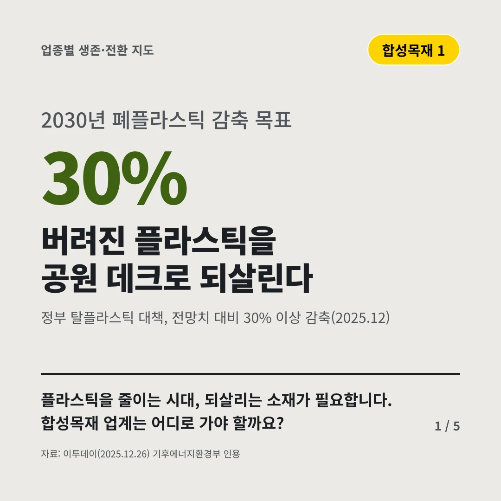
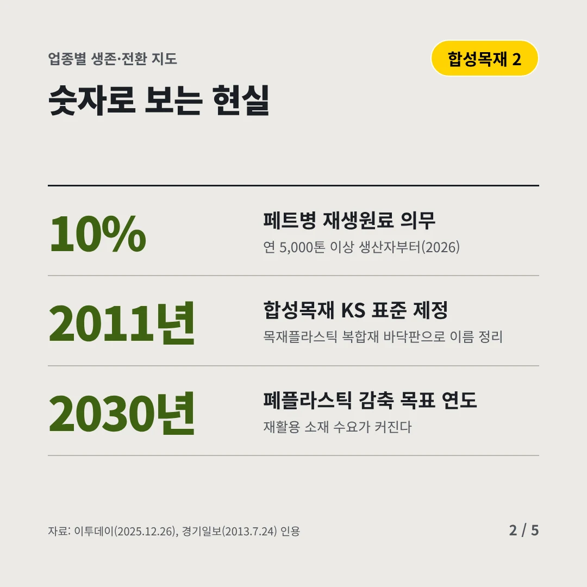
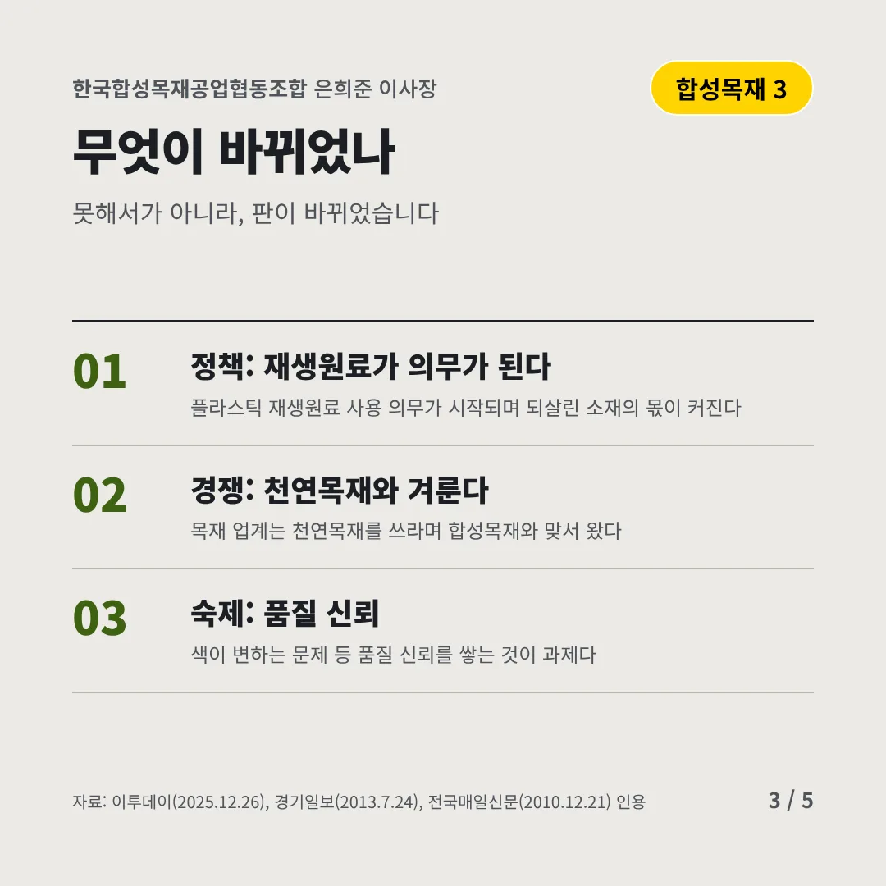
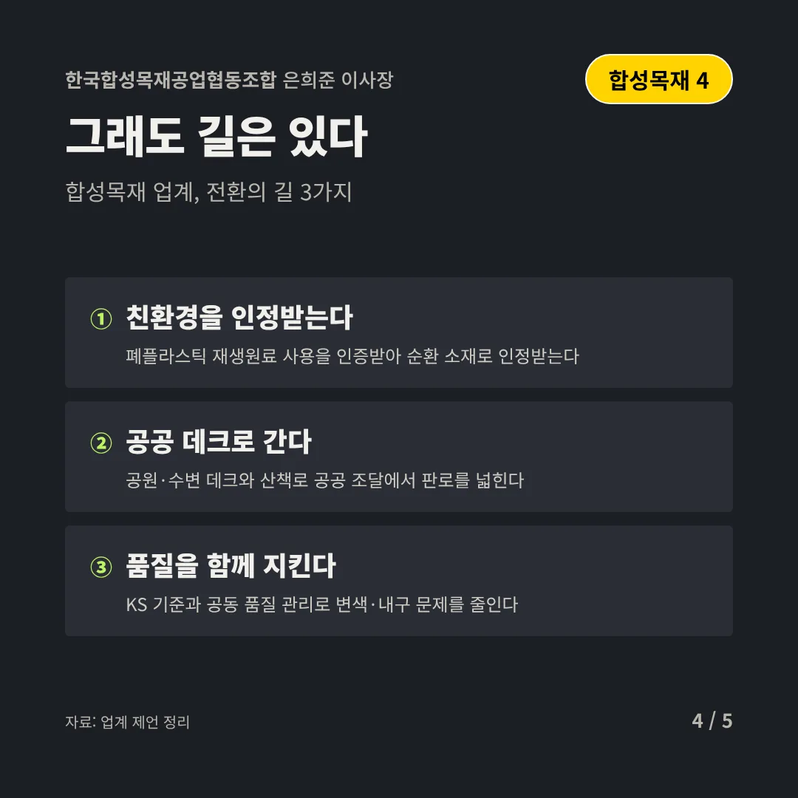
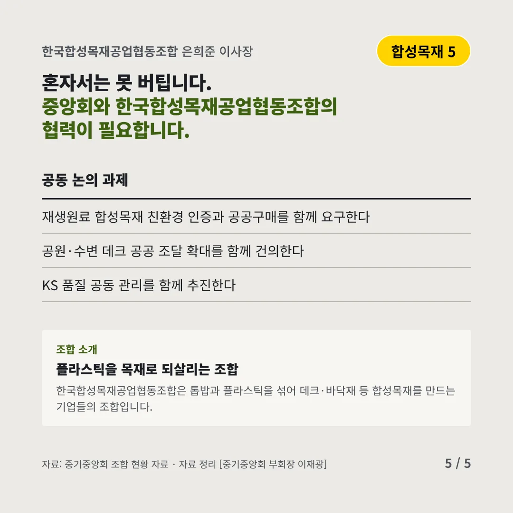
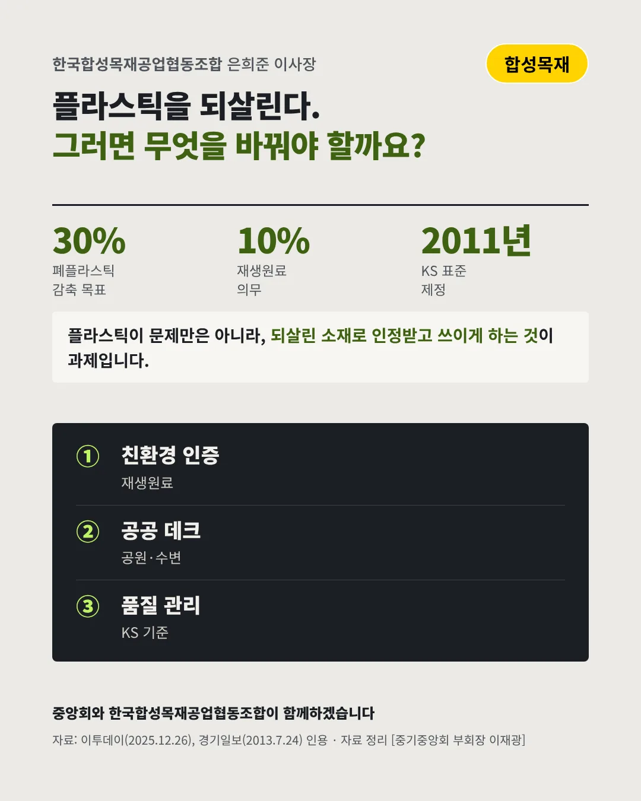

한국합성목재공업협동조합
버려진 플라스틱을 공원 데크로 되살린다
30% 2030년 폐플라스틱 감축 목표






플라스틱을 줄이는 시대, 되살리는 소재가 필요합니다. 합성목재 업계는 어디로 가야 할까요?
숫자로 보는 현실
- 10%페트병 재생원료 의무연 5,000톤 이상 생산자부터(2026)
- 2011년합성목재 KS 표준 제정목재플라스틱 복합재 바닥판으로 이름 정리
- 2030년폐플라스틱 감축 목표 연도재활용 소재 수요가 커진다
무엇이 바뀌었나
- 정책: 재생원료가 의무가 된다플라스틱 재생원료 사용 의무가 시작되며 되살린 소재의 몫이 커진다
- 경쟁: 천연목재와 겨룬다목재 업계는 천연목재를 쓰라며 합성목재와 맞서 왔다
- 숙제: 품질 신뢰색이 변하는 문제 등 품질 신뢰를 쌓는 것이 과제다
그래도 길은 있다
- 친환경을 인정받는다폐플라스틱 재생원료 사용을 인증받아 순환 소재로 인정받는다
- 공공 데크로 간다공원·수변 데크와 산책로 공공 조달에서 판로를 넓힌다
- 품질을 함께 지킨다KS 기준과 공동 품질 관리로 변색·내구 문제를 줄인다
한 장 요약

조합 소개
한국합성목재공업협동조합은 톱밥과 플라스틱을 섞어 데크·바닥재 등 합성목재를 만드는 기업들의 조합입니다.
자료: 이투데이(2025.12.26), 경기일보(2013.7.24), 전국매일신문(2010.12.21)